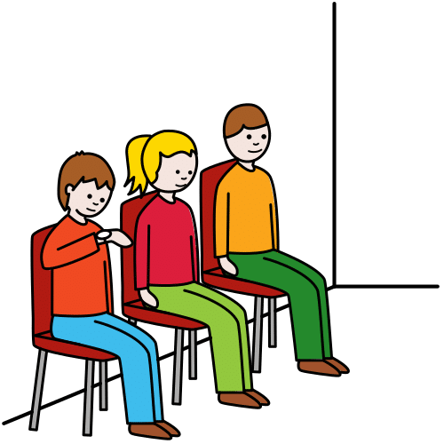
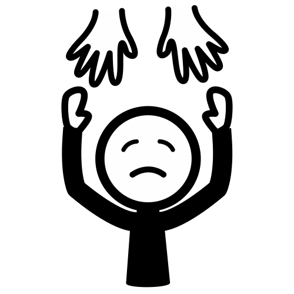
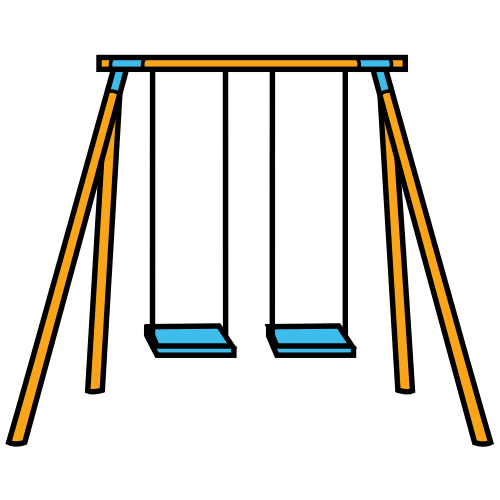
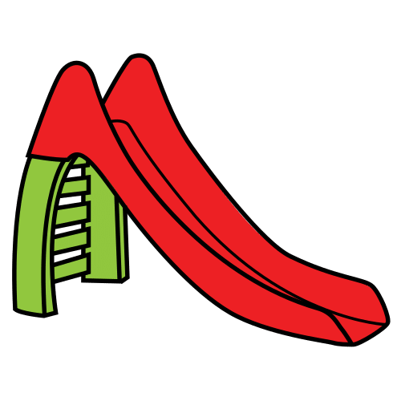
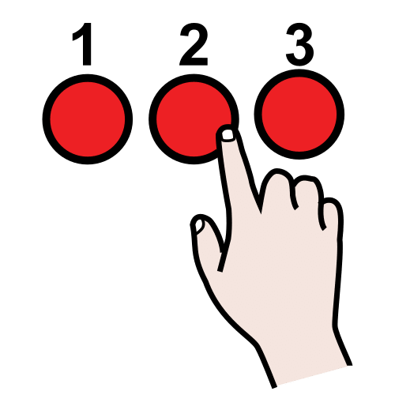
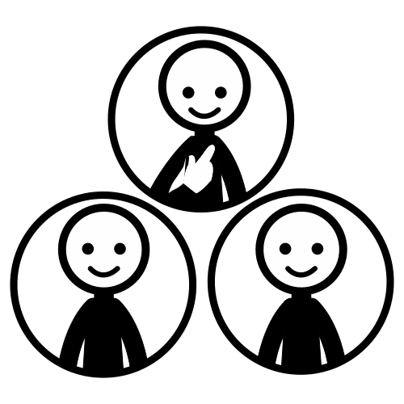
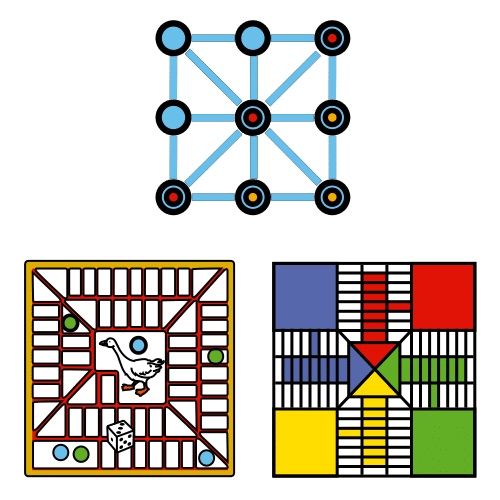
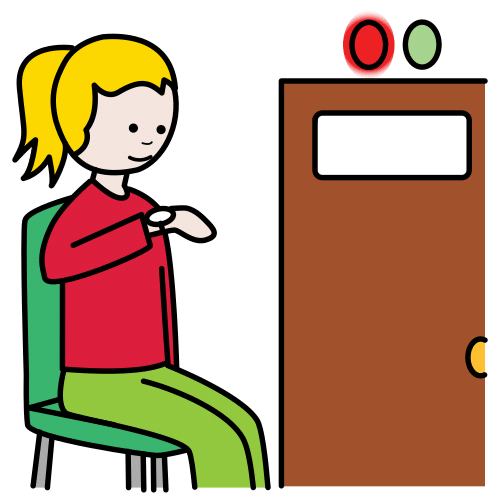

Apoyo visual · Para toda la clase
Turnos
visibles
Para esperar sabiendo cuándo me toca. Pensado para el alumnado con trastorno del espectro del autismo (TEA) o con
trastorno por déficit de atención e hiperactividad (TDAH), y para toda la clase.
Pictogramas: Sergio Palao. ARASAAC (Gobierno de Aragón). CC BY-NC-SA.
Licencia CC BY-NC-SA 4.0
ideducando.es
En el aula,la mesay el patio
Antes de empezar
De un vistazo
Esperar cuesta menos cuando se ve cuándo llega el turno. Aquí, los turnos salen de un bote y se colocan en un tablero
con tres casillas: «Ahora», «Después» y «Luego». Cada peque ve a quién le toca y cuántos turnos le faltan. Sirve para
toda la clase y ayuda sobre todo a quien necesita saber qué va a pasar o a quien le cuesta mucho esperar.
Un turno, en cuatro pasos
- Saca tres tarjetas del bote y ponlas en el tablero.
- Dilo en voz alta: «Ahora, Lucía. Después, Omar. Luego, Vera».
- Al acabar, «He terminado»: su tarjeta va al bote «Ya me ha tocado».
- Las otras dos avanzan y sale una nueva del bote.
Empieza en un momento tranquilo, con algo que guste y turnos cortos. Las fotos, solo con permiso de
cada familia. La guía de la página explica cómo enseñarlo y cómo alargar la espera
poco a poco.
Para los botes y el tablero · Para recortar
Bote de turnos y actividades
Pega cada etiqueta en su bote con celo. Las tarjetas de actividad van en «Turnos para», con velcro suave detrás. En
las dos en blanco, dibuja o pega un pictograma antes de plastificar.
Pictogramas: Sergio Palao. Origen: ARASAAC (arasaac.org). Licencia CC BY-NC-SA. Propiedad: Gobierno de Aragón. El
bote y las tarjetas son de IdEducando.

Cartel para la clase
Espero mi turno
Mientras espero, puedo…
Me lo digo:«Ahora le toca a otro.
Pronto me toca a mí».

Si me cuesta mucho, pido ayuda.
Pictogramas: Sergio Palao. Origen: ARASAAC (arasaac.org). Licencia CC BY-NC-SA. Propiedad: Gobierno de Aragón. El
dibujo del tablero es de IdEducando.
Tarjetas de doble cara: Me toca y He terminado
Me toca · He terminado · Tarjetas de doble cara
Corta por la línea de puntos y dobla por la gris
Dobla cada tarjeta por la línea gris, con lo impreso por fuera, y pega las dos caras antes de plastificar. Quien juega o
habla tiene la tarjeta por «Me toca». Al acabar, la gira, «He terminado», y se la pasa a quien sigue.
Pictogramas: Sergio Palao. Origen: ARASAAC (arasaac.org). Licencia CC BY-NC-SA. Propiedad: Gobierno de Aragón.
Juegos de mesa · Para recortar
Ruleta de turnos
Cada jugador o jugadora escribe su nombre en un sector, con rotulador de pizarra. La flecha señala a quién le toca y
gira siempre hacia la derecha, como las agujas del reloj.
Recorta la flecha por su borde. Su cruz va encima de la cruz del centro, con el encuadernador.
De 2 a 4 jugadores
Así jugamos por turnos
Con dos o tres jugadores
Con dos, escribid cada nombre en dos sectores, uno sí y otro no. Con tres, el cuarto sector puede ser del adulto, que
también juega y espera su turno. Para montarla: recorta la ruleta y la flecha, plastifícalas y únelas por las dos
cruces con un encuadernador.
Pictogramas: Sergio Palao. Origen: ARASAAC (arasaac.org). Licencia CC BY-NC-SA. Propiedad: Gobierno de Aragón. La
ruleta y la flecha son de IdEducando.
Patio · Para recortar
Turnos en el patio
Dos piezas para el adulto del patio: perfóralas por el círculo y únelas con la anilla. En la tira, los nombres se
escriben con rotulador de pizarra y se borran con el dedo.


¿A quién le toca?

Contamos juntos
Ideas para el patio
-
En el columpio, contad los vaivenes en voz alta, de 10 a 1. Quien espera también cuenta: así sabe
cuándo le toca. Al llegar a «¡Cambio!», baja y sube quien sigue.
-
En el tobogán o en la fila, escribe en la tira los tres siguientes y dilo en voz alta: «Ahora,
Leo. Después, Ana. Luego, Iker».
-
Con un compañero o una compañera de turnos, que lleva la cuenta y anima a quien espera. Cambiad
de compañero cada semana.
Pictogramas: Sergio Palao. Origen: ARASAAC (arasaac.org). Licencia CC BY-NC-SA. Propiedad: Gobierno de Aragón.
Guía para el docente
Turnos visibles: cómo enseñarlos y cómo alargar la espera
Esperar el turno cuesta a cualquier edad, y más si no sabes cuándo te va a tocar. Este material hace visibles los
turnos: salen de un bote y se colocan en un tablero con tres casillas, «Ahora», «Después» y «Luego». Así, cada peque ve a
quién le toca y cuánto le falta. Es para toda la clase y ayuda sobre todo al alumnado con trastorno del espectro del
autismo (TEA) o con trastorno por déficit de atención e hiperactividad (TDAH).
Por qué ayuda
-
Lo que se ve, se entiende mejor. Los apoyos visuales están entre las 28 prácticas con respaldo para
el alumnado con TEA de 0 a 22 años (Hume y otros, 2021). El equipo AFIRM, de la Universidad de Carolina del Norte,
los define como señales concretas que acompañan a la palabra o la sustituyen (Sam y AFIRM Team, 2024). El Instituto
Nacional para la Excelencia en la Salud y la Atención del Reino Unido (NICE) recomienda usar palabras, dibujos o
símbolos con sentido para cada peque. Entre lo que hace más probables las conductas que desafían, cita la falta de
previsibilidad y de estructura (NICE, CG170, recomendaciones 1.1.9 y 1.4.1).
-
Esperar cuesta. Los Centros para el Control y la Prevención de Enfermedades de Estados Unidos (CDC)
citan la dificultad para esperar el turno entre las señales del TDAH (CDC, 2026a). En el aula, aconsejan avisar más de
una vez antes de cada cambio (CDC, 2026b).
-
La espera se aprende poco a poco. En un estudio con un niño con dificultades del desarrollo, una
tarjeta de «espera» y un reloj visual ayudaron a alargar la espera, paso a paso, de un segundo a diez minutos. Los
autores comentan también qué aporta hacer otra cosa mientras se espera (Grey y otros, 2009).
-
Lo que pide la Región de Murcia. Con el alumnado con TDAH, permitir materiales que se puedan
manipular, trabajar la «voz interna» y, si hay problemas de conducta, recoger los acuerdos en materiales visuales, como
las secuencias con pictogramas (Resolución de 30 de julio de 2019, anexo IV). Con el alumnado con trastorno del lenguaje, aprovechar los juegos de clase para practicar la
intervención por turnos (anexo V).
-
Lo que no sabemos. El tablero, como conjunto, no se ha estudiado: junta apoyos con respaldo. Lo que no
lleva fuente en esta guía es propuesta de IdEducando.
Cómo enseñarlo
-
Preséntalo en un momento tranquilo, con algo que guste y turnos cortos: el ordenador, el tobogán o elegir el cuento.
Pon su tarjeta en «Turnos para».
-
Saca tres tarjetas delante del grupo y dilo siempre con las mismas palabras: «Ahora, Lucía. Después, Omar. Luego,
Vera». Señala cada casilla mientras lo dices.
- Quien está en «Ahora» coge la tarjeta «Me toca». Al acabar, la gira: «He terminado».
- Su tarjeta va al bote «Ya me ha tocado». Las otras dos avanzan y sale una nueva para «Luego».
-
Dile a quien ha esperado qué ha hecho bien: «Has esperado mirando el tablero». En los seis estudios que revisaron
Royer y otros (2019), el elogio que nombra la conducta aumentó el tiempo dedicado a la tarea y redujo las conductas
inadecuadas.
Tres niveles para toda la clase
El Diseño Universal para el Aprendizaje (DUA) propone anticipar los retos y ajustar el apoyo (CAST, 2024,
consideraciones 6.2 y 8.2). El tablero sirve a todo el grupo y no señala a nadie (consideración 8.4).
- Nivel 1, círculo: solo «Ahora» y «Después». Espera un turno. Para empezar, en Infantil o con quien espera muy poco.
- Nivel 2, cuadrado: las tres casillas. Espera dos turnos.
- Nivel 3, rombo: la ronda entera, sin tablero: la ruleta o la tarjeta «Me toca», que pasa de mano en mano.
Alargar la espera poco a poco
-
Empieza con esperas que salgan casi siempre bien. Sube de nivel cuando espere con calma la mayoría de los días. Este
criterio es propuesta nuestra: ajústalo a cada peque.
-
Mientras espera, que tenga algo que hacer. El cartel «Espero mi turno» propone seis ideas, y Murcia pide permitir
materiales «anti-estrés» que se puedan manipular (anexo IV).
- Si un día no puede, baja un nivel sin darle importancia. Ningún turno se quita como castigo.
-
Cuando el grupo ya conoce la rutina, un jefe o una jefa de turnos saca las tarjetas y las mueve. La función rota cada
día.
Un bote justo
-
Las tarjetas pasan del «Bote de turnos» a «Ya me ha tocado». Cuando el primero se vacía, vuelven todas: nadie repite
hasta que hayan pasado todos.
-
Si alguien necesita ir antes, por ejemplo porque esperar le pone muy nervioso, sácalo el primero sin que sea un premio:
«Hoy empieza Omar». Todos tienen su turno igual.
En la mesa y en el patio
-
Juegos de mesa. La flecha de la ruleta señala a quién le toca. Al terminar, el jugador o la jugadora la
gira hacia el siguiente sector.
-
Patio. La tira y la cuenta atrás van con el adulto, en la anilla. En un estudio con dos alumnos con TEA
de Primaria, enseñar a sus compañeros a jugar con ellos en el recreo aumentó sus turnos y sus iniciativas para jugar
(Harper y otros, 2008). Por eso proponemos un compañero o una compañera de turnos.
Seguridad y privacidad
- Las fotos, solo con permiso de cada familia, y nunca en internet ni en grupos de mensajería.
- El tablero no habla del diagnóstico de nadie. Los turnos son de toda la clase.
Para las familias
Turnos visibles, también en casa
En clase usamos un tablero para los turnos, con tres casillas: «Ahora», «Después» y «Luego». Cada peque ve a quién le
toca y cuánto le falta. Así, esperar cuesta menos.
Esperar es difícil para muchos niños y niñas. También para quienes tienen trastorno del espectro del autismo (TEA) o
trastorno por déficit de atención e hiperactividad (TDAH). Se aprende poco a poco y con ayuda.

Turnos en casa
- Decid los turnos en voz alta y contad con los dedos: «Primero, tu hermana. Después, tú».
- Usad algo que pase de mano en mano: una tarjeta, un muñeco o el mando del juego.
- Al principio, esperas muy cortas. Poco a poco, un poco más largas.
- Cuando espere, decidle qué ha hecho bien: «Has esperado tu turno».

Momentos para practicar

Mientras espera
Puede respirar despacio, contar hasta diez, mirar cómo juegan los demás o tener algo blando en las manos. En el cole lo
practicamos con el cartel «Espero mi turno».
¿Queréis empezar con apoyos visuales en casa? La guía «Apoyos visuales en casa» trae plantillas y
tarjetas con rutinas de casa. Es gratis, en
ideducando.es/material-gratuito/apoyos-visuales-familias.
Turnos visibles. IdEducando, noviembre de 2026. Licencia CC BY-NC-SA 4.0. Los símbolos pictográficos
utilizados son propiedad del Gobierno de Aragón y han sido creados por Sergio Palao para ARASAAC (https://arasaac.org),
que los distribuye bajo Licencia Creative Commons BY-NC-SA.
Fuentes y créditos
De dónde sale este material
Turnos visibles. Equipo IdEducando, noviembre de 2026.
ideducando.es/material-gratuito/turnos-visibles. Fuentes consultadas el 17/11/2026.
Apoyos visuales y autismo
-
Hume, K. y otros (2021). Evidence-based practices for children, youth, and young adults with autism: Third generation
review. Journal of Autism and Developmental Disorders, 51(11), 4013-4032. DOI: 10.1007/s10803-020-04844-2
-
Sam, A. y AFIRM Team (2024). Visual Supports (actualización de 2024). Universidad de Carolina del Norte en
Chapel Hill, Frank Porter Graham Child Development Institute. afirm.fpg.unc.edu
-
National Institute for Health and Care Excellence (2013, actualizada en 2021). Autism spectrum disorder in under
19s: support and management (CG170), recomendaciones 1.1.9 y 1.4.1. nice.org.uk
Esperar y jugar por turnos
-
Centers for Disease Control and Prevention (2026a). Symptoms of ADHD. Revisada el 30 de julio de 2026.
cdc.gov/adhd
-
Centers for Disease Control and Prevention (2026b). ADHD in the Classroom. Actualizada el 21 de octubre de
2026. cdc.gov/adhd
-
Resolución de 30 de julio de 2019 de la Dirección General de Atención a la Diversidad y Calidad Educativa, por la que
se dictan instrucciones para la identificación y la respuesta educativa a las necesidades del alumnado que presenta
dificultades de aprendizaje. Boletín Oficial de la Región de Murcia (BORM) n.º 184, de 10 de agosto de 2019, anexo IV,
págs. 25060 y 25061, y anexo V, pág. 25063.
-
Grey, I., Healy, O., Leader, G. y Hayes, D. (2009). Using a Time Timer to increase appropriate waiting behavior in a
child with developmental disabilities. Research in Developmental Disabilities, 30(2), 359-366. DOI:
10.1016/j.ridd.2008.07.001
-
Harper, C. B., Symon, J. B. y Frea, W. D. (2008). Recess is time-in: Using peers to improve social skills of children
with autism. Journal of Autism and Developmental Disorders, 38(5), 815-826. DOI: 10.1007/s10803-007-0449-2
-
Royer, D. J., Lane, K. L., Dunlap, K. D. y Ennis, R. P. (2019). A systematic review of teacher-delivered
behavior-specific praise on K-12 student performance. Remedial and Special Education, 40(2), 112-128. DOI:
10.1177/0741932517751054
Diseño Universal para el Aprendizaje
-
CAST (2024). Universal Design for Learning Guidelines version 3.0, consideraciones 6.2, 8.2 y 8.4.
udlguidelines.cast.org
Pictogramas, dibujos y licencia
Los pictogramas son de ARASAAC, el Centro Aragonés para la Comunicación Aumentativa y Alternativa. Su licencia pide
citar este texto: «Los símbolos pictográficos utilizados son propiedad del Gobierno de Aragón y han sido creados por
Sergio Palao para ARASAAC (https://arasaac.org), que los distribuye bajo Licencia Creative Commons BY-NC-SA». Con
pictogramas de ARASAAC, este material no se puede vender: es gratis y lo será siempre. El tablero, las tarjetas, los
botes, la ruleta, las caras de la portada y el diseño son de IdEducando. Licencia CC BY-NC-SA 4.0: puedes copiarlo y
adaptarlo citando a IdEducando, sin fines comerciales y con la misma licencia.